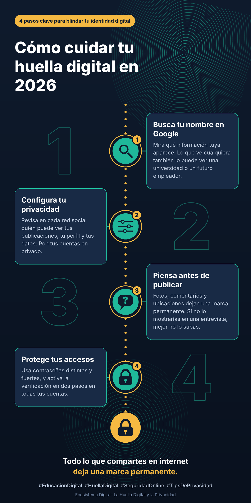
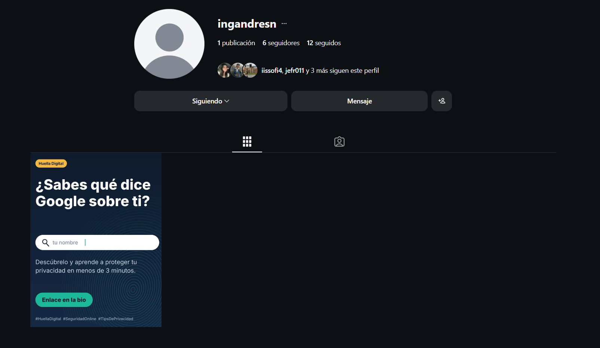

Proyecto Integrador de Contenidos Digitales
Las tres piezas de este ecosistema comparten identidad visual y conceptual, complementándose entre sí.
Desarrolla el concepto central de la huella digital y ofrece 3 consejos clave de seguridad.
Sintetiza los 4 pasos clave para blindar la identidad digital.

Profundiza en casos reales de consecuencias de la huella digital e invita a explorar el sitio.
| Elemento | Aplicación en las piezas | Justificación / Propósito |
|---|---|---|
| Título SEO | Guía rápida: Cómo cuidar tu huella digital en 2026 | Incluye términos de alta búsqueda y capta la atención de la audiencia. |
| Palabras clave | huella digital, privacidad en redes, seguridad online, identidad digital | Facilita la indexación y posicionamiento en buscadores. |
| Descripción | Aprende a proteger tu información y gestionar lo que internet sabe de ti con esta guía integradora. | Ofrece una síntesis clara del valor del contenido para mejorar el CTR. |
| Hashtags | #EducacionDigital #HuellaDigital #SeguridadOnline #TipsDePrivacidad | Maximiza el alcance orgánico en redes sociales. |
| Llamado a la Acción (CTA) | ¡Haz clic en el enlace del perfil para ver la infografía completa! | Incentiva la navegación e interacción entre las piezas del ecosistema. |
| Accesibilidad | Subtítulos automáticos en el video, transcripción del podcast y texto alternativo (Alt) en la infografía. | Garantiza el acceso a personas con discapacidades auditivas o visuales. |
